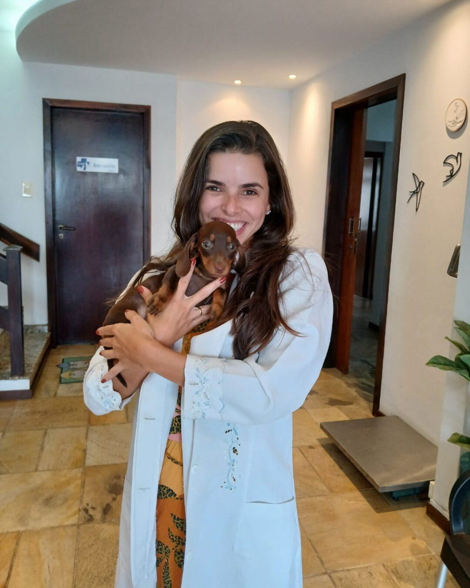

Dra. Wisley Malaquias
Cirurgia, ortopedia e felinos
- Formada pela UFSC
- Especialização em Clínica Cirúrgica de Pequenos Animais (UFPR)
- Residência em ortopedia e neurologia
- Aprimoramento em ortopedia (Unesp-Jaboticabal)
- Cursos de manejo de fraturas, TPLO, ortopedia e reabilitação, análises clínicas e emergência
- Certificação no manejo Cat Friendly